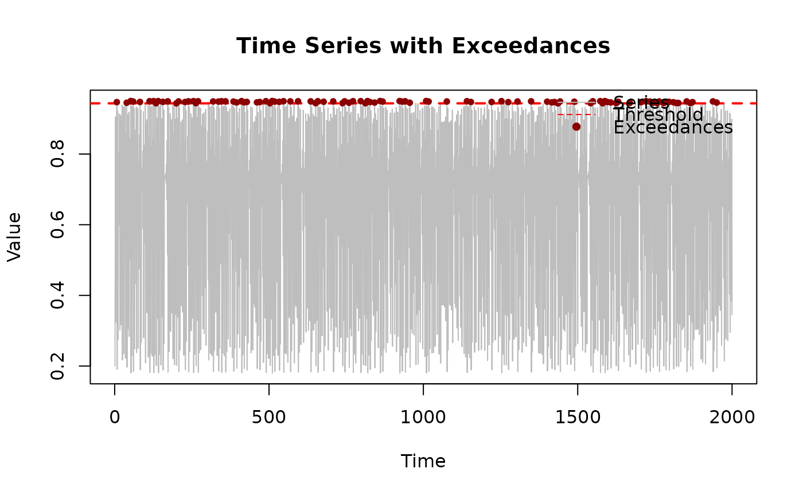

Estimates the extremal index θ from time series data using the runs estimator. The extremal index quantifies the degree of clustering in extreme values, with θ = 1 indicating independence and θ < 1 indicating clustering.
Arguments
- x
Numeric vector. The time series to analyze. Should be stationary or at least have stationary extremal behavior. Must contain enough data to get reliable exceedance counts (typically n > 500 for threshold at 90th-95th percentile).
- threshold
Numeric scalar. Values above this are considered exceedances. Should be a high quantile of the data (typically 0.90-0.99). The choice affects both the estimate and its variance: - Higher threshold: fewer exceedances, higher variance, less bias - Lower threshold: more exceedances, lower variance, potential bias Use
threshold_diagnosticsfor guidance on selection.- run_length
Integer. The maximum gap (in time steps) between exceedances that are considered part of the same cluster. Typical values are 1 or 2. Larger values may be appropriate for systems with long-range dependence. Must be positive.
Value
Numeric scalar giving the extremal index estimate, a value in (0, 1]. Returns NA if there are no exceedances above the threshold.
**Interpreting the result**: - Values close to 1: weak clustering, nearly independent extremes - Values around 0.5-0.7: moderate clustering (common in chaotic systems) - Values below 0.5: strong clustering, extremes appear in bursts
Use bootstrap_extremal_index to obtain confidence intervals
for quantifying uncertainty.
Details
## Overview The extremal index θ ∈ (0, 1] is a fundamental parameter in extreme value theory for dependent sequences. It measures the tendency of extreme values to appear in clusters rather than individually.
## Interpretation of θ - **θ = 1**: Extreme values occur independently (like IID data) - **θ < 1**: Extreme values cluster together - **θ = 0.5**: On average, extremes appear in pairs - **θ = 0.33**: On average, extremes appear in triplets
In chaotic dynamical systems, θ is typically less than 1 because the system's deterministic nature causes extreme events to cluster. The value of θ depends on the system's mixing properties and the choice of threshold.
## The Runs Method The runs estimator defines clusters based on the gaps between exceedances. Two exceedances belong to the same cluster if they are separated by at most `run_length` time steps. The estimator is: $$\hat{\theta} = \frac{N_c}{N}$$ where \(N_c\) is the number of clusters and N is the total number of exceedances.
## Choosing run_length The choice of `run_length` affects the estimate: - **Too small**: May split natural clusters, overestimating θ - **Too large**: May merge distinct clusters, underestimating θ
Common choices: - run_length = 1 or 2 for most applications - run_length based on ACF structure (first zero crossing) - run_length based on extremal index diagnostics
## Relationship to Return Times The extremal index affects return times for extreme events. For a threshold u with exceedance probability p, the mean cluster size is 1/θ and the mean inter-cluster time is 1/(θp).
Mathematical Background
For a stationary sequence X_n, the extremal index is defined as: $$\theta = \lim_{n \to \infty} \frac{P(M_n \le u_n)^n}{P(X_1 \le u_n)}$$ where \(M_n = \max(X_1, \ldots, X_n)\) and \(u_n\) is a high threshold satisfying nP(X_1 > u_n) → τ for some τ > 0.
The runs estimator was introduced by Smith & Weissman (1994) and provides a consistent estimator under appropriate mixing conditions.
References
Smith, R. L., & Weissman, I. (1994). Estimating the extremal index. *Journal of the Royal Statistical Society: Series B (Methodological)*, 56(3), 515-528.
Ferro, C. A. T., & Segers, J. (2003). Inference for clusters of extreme values. *Journal of the Royal Statistical Society: Series B (Statistical Methodology)*, 65(2), 545-556. doi:10.1111/1467-9868.00401
Leadbetter, M. R. (1983). Extremes and local dependence in stationary sequences. *Zeitschrift für Wahrscheinlichkeitstheorie und verwandte Gebiete*, 65(2), 291-306. doi:10.1007/BF00532484
See also
extremal_index_intervals for the alternative intervals estimator,
bootstrap_extremal_index to obtain confidence intervals,
cluster_sizes to analyze cluster structure,
threshold_exceedances for extracting exceedances.
For a comprehensive tutorial, see vignette("estimating-theta-logistic").
Examples
# Simulate chaotic time series
x <- simulate_logistic_map(n = 2000, r = 3.8, x0 = 0.2)
# Choose high threshold (95th percentile)
threshold <- quantile(x, 0.95)
# Estimate extremal index with run_length = 2
theta <- extremal_index_runs(x, threshold, run_length = 2)
cat("Extremal index estimate:", round(theta, 3), "\n")
#> Extremal index estimate: 1
# Interpretation
if (theta < 0.7) {
cat("Strong clustering detected\n")
cat("Mean cluster size:", round(1/theta, 2), "\n")
} else if (theta < 0.9) {
cat("Moderate clustering detected\n")
} else {
cat("Weak clustering, nearly independent extremes\n")
}
#> Weak clustering, nearly independent extremes
# Compare different run_length values
cat("\nSensitivity to run_length:\n")
#>
#> Sensitivity to run_length:
for (r in 1:5) {
theta_r <- extremal_index_runs(x, threshold, run_length = r)
cat("run_length =", r, ": theta =", round(theta_r, 3), "\n")
}
#> run_length = 1 : theta = 1
#> run_length = 2 : theta = 1
#> run_length = 3 : theta = 1
#> run_length = 4 : theta = 1
#> run_length = 5 : theta = 1
# Effect of threshold choice
cat("\nSensitivity to threshold:\n")
#>
#> Sensitivity to threshold:
for (q in c(0.90, 0.95, 0.99)) {
thr <- quantile(x, q)
theta_q <- extremal_index_runs(x, thr, run_length = 2)
n_exc <- sum(x > thr)
cat(sprintf("%.2f quantile: theta = %.3f (%d exceedances)\n",
q, theta_q, n_exc))
}
#> 0.90 quantile: theta = 1.000 (200 exceedances)
#> 0.95 quantile: theta = 1.000 (100 exceedances)
#> 0.99 quantile: theta = 1.000 (20 exceedances)
# Analyze cluster structure
exc_indices <- threshold_exceedances(x, threshold)
clusters <- cluster_exceedances(exc_indices, run_length = 2)
cat("\nCluster statistics:\n")
#>
#> Cluster statistics:
cat("Number of clusters:", clusters$n_clusters, "\n")
#> Number of clusters: 100
cat("Number of exceedances:", length(exc_indices), "\n")
#> Number of exceedances: 100
cat("Theta:", clusters$n_clusters / length(exc_indices), "\n")
#> Theta: 1
# Visualize exceedances and clusters
plot(x, type = "l", col = "gray", main = "Time Series with Exceedances",
xlab = "Time", ylab = "Value")
abline(h = threshold, col = "red", lty = 2, lwd = 2)
points(exc_indices, x[exc_indices], col = "darkred", pch = 16, cex = 0.8)
legend("topright", legend = c("Series", "Threshold", "Exceedances"),
col = c("gray", "red", "darkred"),
lty = c(1, 2, NA), pch = c(NA, NA, 16), bty = "n")

# \donttest{
# Get confidence interval via bootstrap
boot_result <- bootstrap_extremal_index(
x, threshold, run_length = 2, B = 500
)
cat("\n95% Confidence Interval for theta:\n")
#>
#> 95% Confidence Interval for theta:
cat(sprintf("[%.3f, %.3f]\n", boot_result$ci[1], boot_result$ci[2]))
#> [0.983, 1.000]
# }